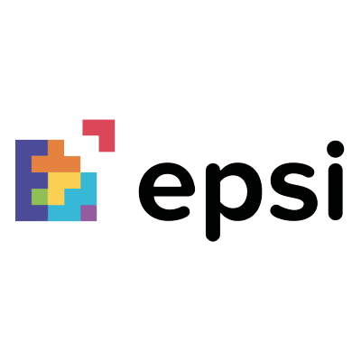
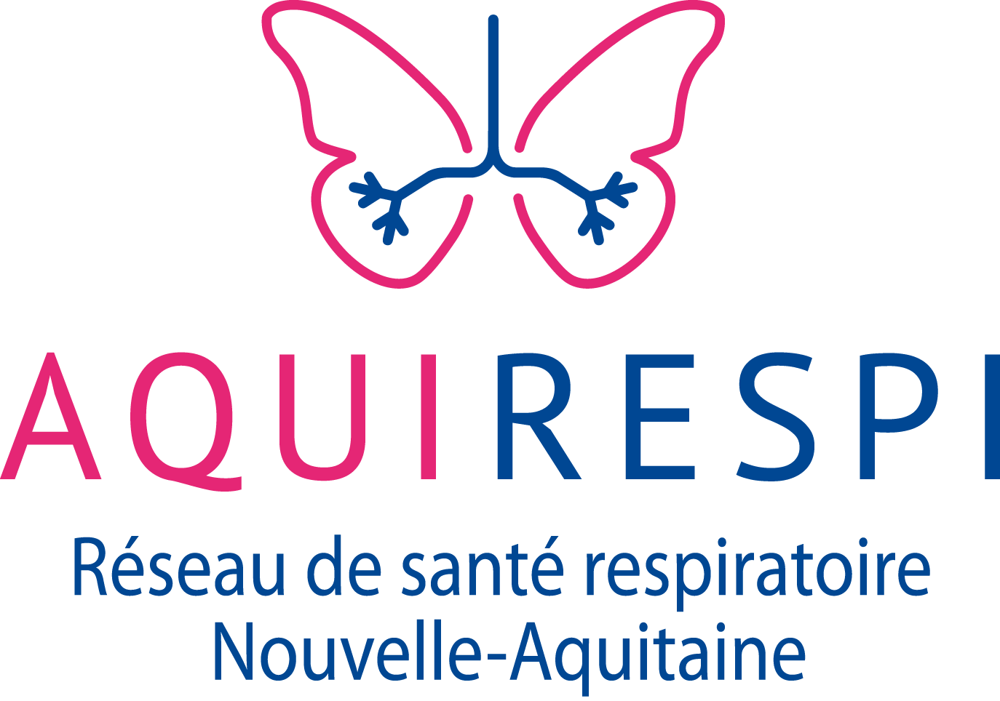

AquiRespi est une plateforme de coordination des soins respiratoires en Nouvelle-Aquitaine.
Cette association m'a accepté en tant que stagiaire pendant deux mois de fin mai à fin juin 2022.
Présentation du stage chez AQUIRESPI
Bases de départ :
- Fonctionnalités du site
- Logo et images du site
Technologies utilisées :
- PHP5, MySQL, HTML, CSS
- Monday, Trello, Teams
- Visual Code Studio, Github
Fonctionnalités principales du site :
- CRUD
- Filtrage avec paramètres données par
l'utilisateur
- Formulaire de connexion
Apports du stage :
- Prise de confiance en moi
- Utilisation d'outils
- Amélioration des compétences en
développement
- Valeurs de professionnalisme

X
